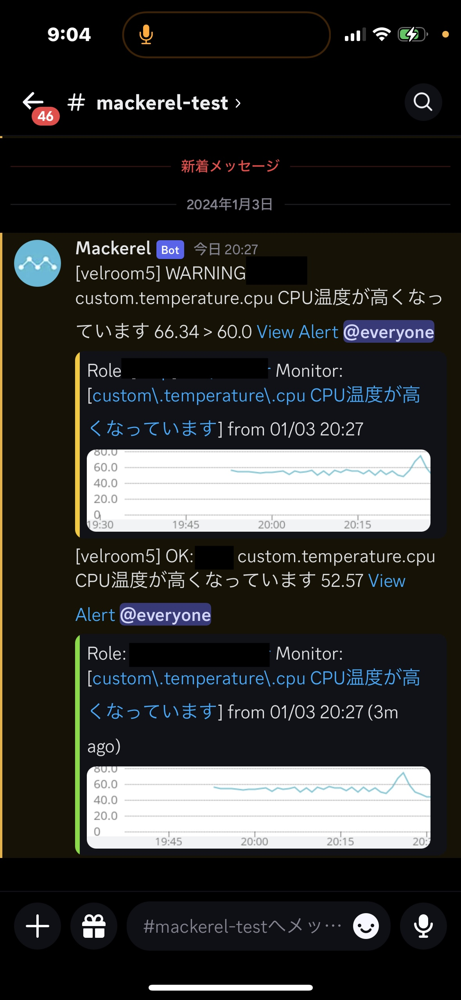

ラズパイを買って自宅サーバ入門した話
- One minute read - 87 words背景
年末年始で暇だったので、ラズパイを買ってファイルサーバでも作ってみるか、と思って作り始めた。諸々で2日ほどかかった。 https://www.amazon.co.jp/gp/product/B081YD3VL5/ref=ppx_yo_dt_b_asin_title_o02_s00?ie=UTF8&psc=1
ちょうどたまたま家に使わなくなった以下のものがあったので、それを有効活用したいみたいな気持ちもあった。
- 200GBのmicroSD
- 元switchのSDカード
- ゲームが入らなくなってきたので512GBを買ったのでこれが退役した
- 2TBのHDD(Gdrive)
- https://www.amazon.co.jp/G-Technology-0G10339-HGST-G-Drive-Mobile/dp/B07F8NG48L?th=1
- 元々は前の前のmacのバックアップ用途で買った
- SSDが256GBだったのでバックアップから復活させると簡単に容量を食い潰してしまうため、結局使わなかった
あとはicloudの容量が200GBを超えそうだったので、自宅にバックアップ取れるならこれ以上プランを上げなくてもいいかな、みたいな気持ちがあった。
やったこと
OSのインストール
普通のRecommendedのやつを入れたらOMV6が入らない(対応してない)と言われ、OMV6を入れたらsshができなくなる、みたいな罠を踏んで4回くらい入れ直した。結局入れたのはLiteの方。
Debian12系に当たるので巷の記事が微妙に古くて参考にならないものばかりだった。流れだけ参考にして公式ドキュメントを見るという王道に戻って解決。
OMV6のインストール(回避)
参考にしたもの: https://koh-sen.jp/blog/archives/12238
OMV6を入れるところまではなんとか行ったものの、なんか動作が不安定で先に進めなくなったので回避。
別にファイルサーバが作れればいいのでOMV6にこだわる必要はなかった。
NextCloudのインストール
参考にしたもの: https://qiita.com/hiro2do/items/f8eed40acab713f20693
色々apt経由で入れられないか試行錯誤している中で、調査してたら見つけた。snapという便利パッケージ管理ツール的なのが出ていて、それを使ったら一瞬で入った。すごい。
公式: https://snapcraft.io/docs
外付けHDD有効化
↑のブログ参考に、mount系のコマンドは別で調べてやったら入った。素晴らしいね。
df -hで自分の意図したものが出てきた時は軽く感動。普段仕事ではクラウド上のEC2とかしか触ってないから。物理サーバは実感が湧くのがいいね。
外部公開とHTTPS(TODO)
↑のブログに言われるままにtailscaleとか色々入れてたらどうも証明書関連でうまく行ってないっぽく全世界に公開しそう(一瞬した)になったので、一旦内部公開に止めることにした。別にそれでも要件は満たせるので。
NextCloudを写真のバックアップ先に設定
ここまで1日目。この後監視入れてwikiサーバでも建ててみるかという気分になり、引き続きインストールをしていた。
mackerel導入
入れるのはやるだけ。カスタムメトリックのプラグインを導入するのが苦労した。やりたかったのはラズパイのCPU温度の監視。
公式: https://mackerel.io/ja/docs/entry/advanced/custom-metrics
最終的に書いたもの
[plugin.metrics.temp]
command = ["bash", "/home/xxx/temp.sh"]
最初はcommand="/home/xxx/temp.sh"と書いていた。これでも動いていてくれて良くない？と思ったがなぜかメトリクスが送られなかったので書き方を変えた。
ちゃんとdiscordにも通知するようにした✌️ 
mediawiki導入(回避)
公式: https://www.mediawiki.org/wiki/Manual:Running_MediaWiki_on_Debian_or_Ubuntu/ja
これに沿って初回のセットアップページまでは進んだ。(そこにいくまでにapache2にmod-phpを入れてなくてただのphpファイルがそのまま表示されるみたいな罠を踏んだ。一回休み。)
ただ、NextCloudがMySQLを立ち上げてるっぽく競合してしまったので、仕方なく諦めた。DBを共存させたりポート変えたりとかの回避手段はあるものの、そこまでしたいわけでもないので諦めた。(tryはした)
dokuwiki導入
なんとdokuwikiはDBを立ち上げる必要がないので、いけそう！と思って入れた。
公式: https://www.dokuwiki.org/install:debian
なんとか入ってくれたのでよかった。ただ普通に記法に慣れないw
最近のドキュメント書くツールは便利なんだなあというのを改めて感じる。
メールを送る(TODO)
dokouwikiのユーザー登録にメール送信が必要なのだが、いつまで経ってもメールが来なかった。ログを見るとsendmailが入ってないよって言われたから入れてみるも挙動変わらず。
どうやらメールサーバの設定とかGmailのアプリパスワード？的な色々準備が必要そうなので、宿題。
viのモードを治す
参考にしたもの: https://yaru-yaru.net/reizo/raspberrypi%E3%81%AEvi%E3%81%A7%E6%96%B9%E5%90%91%E3%82%AD%E3%83%BC%E3%82%92%E6%8A%BC%E3%81%99%E3%81%A8abcd%E3%81%8C%E5%87%BA%E3%82%8B%E5%95%8F%E9%A1%8C/
vi互換モードというのになっていたらしい。
最初ユーザーのホームディレクトリにのみ.vimrc書いてたら、sudo viした時に現象が解決しなくて焦った。仕方なくrootの方にも書いてあげたら治った。こういう細かい課題を解決できるようになったのは進歩を感じるね。
構成図を書いた
ちゃんと覚えてるうちにポートとかパスをメモっておいた。
幸運だったこと
一人暮らしを始めていた
これによりルーターの全権を握れているのが大きい。また、契約時にメールサーバももらっていたのでその辺の検証もしやすい。自分の城があるって大事だよね。
仕事で触ってた
困ったら公式ドキュメントを見る。落ち着いてエラーログを確認する。みたいな一連の所作は仕事で息をするように身につけていた(そうしないと仕事にならないので)ので、万策尽きた！みたいになることが少なくてよかった。
大学の時の数年前の自分は調べる力が弱かったのでこういう時に解決できず諦めるしかなかった。
反省
調査ログを途中から取り始めた
最初はまあすぐ終わるやろ、と思いながらやっていた。trelloのコメントにフロー情報的に残していた。
そうだとしても調査ログは残すべきだった。コマンドとやったことを書いておくだけで後から見直した時に価値が出る。結局notionにストック情報としてまとめなおした。
TODO
個人開発にすぎないので気が向いたらやること一覧
- 外部公開とHTTPS
- メールを送る
- 温度、湿度、二酸化炭素濃度などのモニタリング